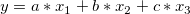

など)として線形項を取り扱い、線形多重回帰ツールを使って解析解を得ることができます。ここでのポイントは、ワークシートに新規列をいくつか作成し、関数の線形項に従って、そこにデータを入力し、そして、新しいデータで線形多重回帰を実行します。
など)として線形項を取り扱い、線形多重回帰ツールを使って解析解を得ることができます。ここでのポイントは、ワークシートに新規列をいくつか作成し、関数の線形項に従って、そこにデータを入力し、そして、新しいデータで線形多重回帰を実行します。
最終更新日:2015/02/04
数式に複数の線形項が含まれていれば、数式の解析解を得ることができます。NLFitを使って、反復解を得るのではなく、異なる独立変数( など)として線形項を取り扱い、線形多重回帰ツールを使って解析解を得ることができます。ここでのポイントは、ワークシートに新規列をいくつか作成し、関数の線形項に従って、そこにデータを入力し、そして、新しいデータで線形多重回帰を実行します。
例えば次の関数に分析的解法がほしいとします。

この関数は次のように表すことができます。

ここで  と
と になります.
になります.
そして、ワークシートに新しい列を2列追加し、2つの項  ,
,  に従ってそれぞれの列にデータを入力します。複数の線形回帰が条件に合わせて実行され、分析的解法が算出されます。詳細な手順は以下の通りです。
に従ってそれぞれの列にデータを入力します。複数の線形回帰が条件に合わせて実行され、分析的解法が算出されます。詳細な手順は以下の通りです。
キーワード: 回帰, フィット, 線形多重回帰, 解析解, 反復解